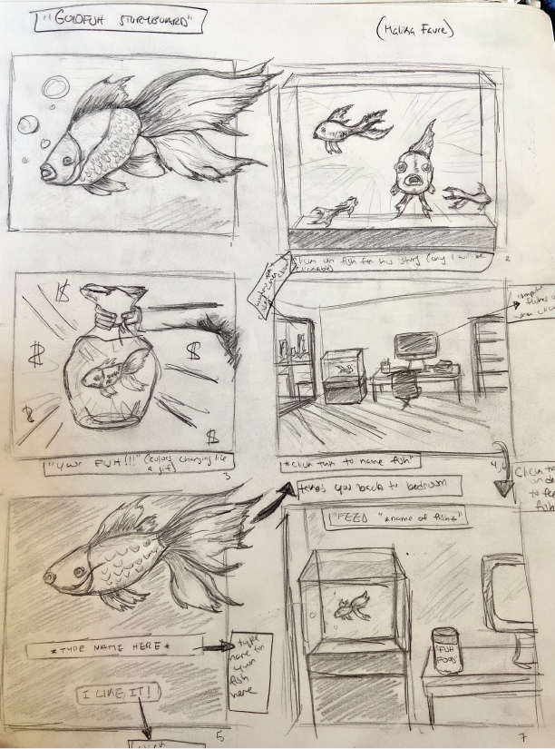
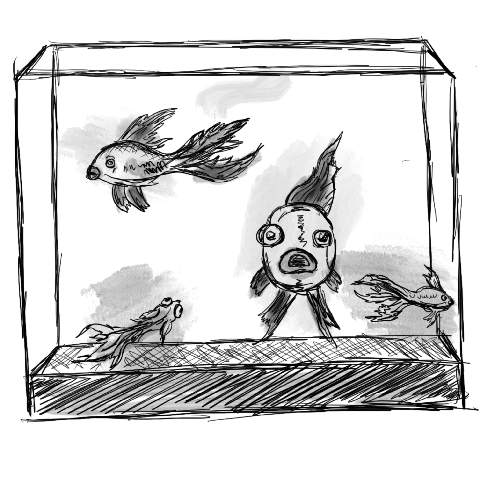
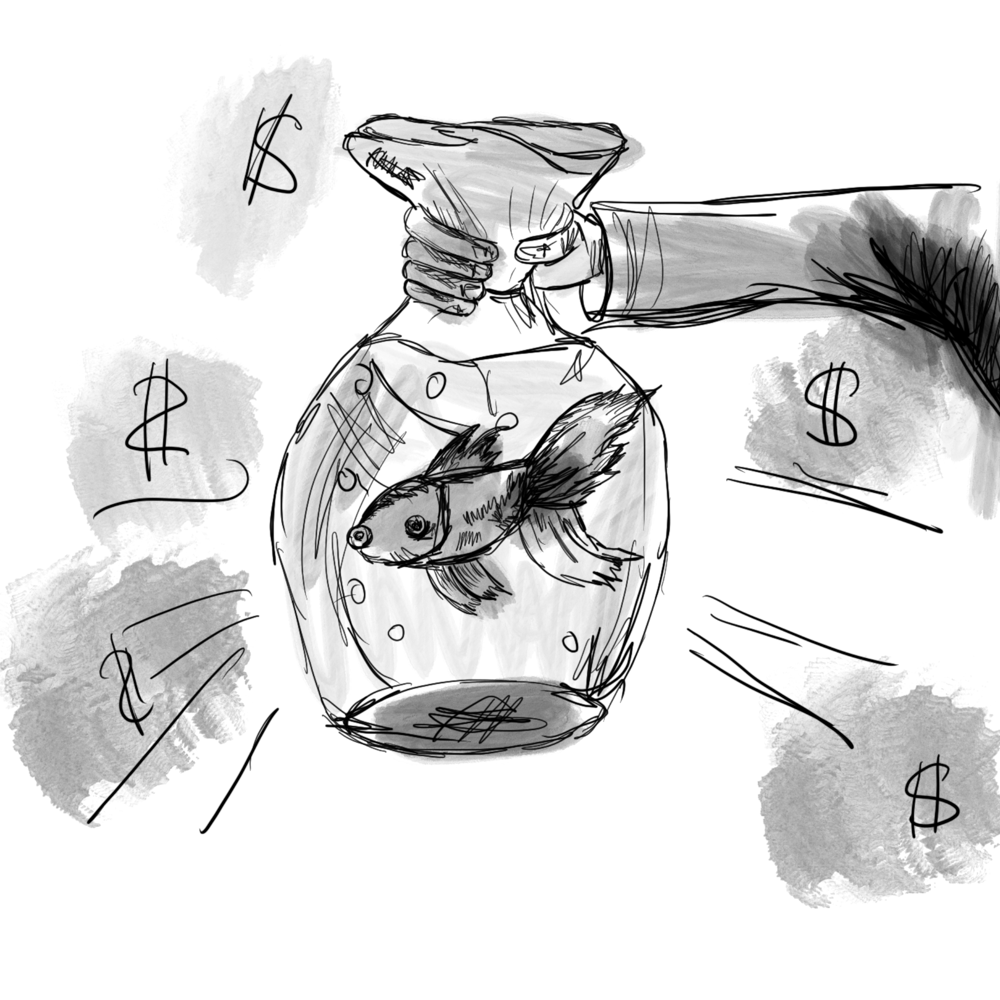

Storyboard Concept
I will be telling the story of a goldfish. My story will start off from the users point of view and then switch to the point of view of the fish halfway through. I will be incorporating a lot of illustrative and comic-like elements. I want to keep everything black and white, to meaintain a sense of darkness, but keeping the illustrations more childlike.

The homepage will be this fishtank. You will only be able to click the larger fish staring right at you, however I would still like to incorporate minor interactive elements with the other fish in the tank.
 